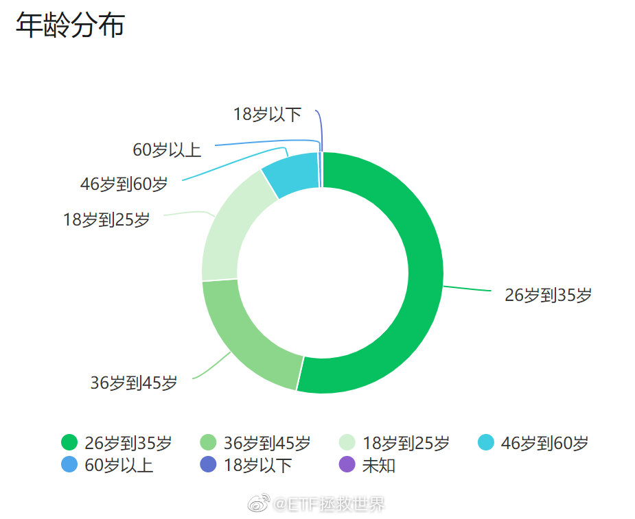

看了一下各位的年龄。25岁以下的只有18%。年轻人中70%也有脑子知道独立思考（关注理财说明有闲钱同时爱思考），那就是只有占总数5%左右的思想比较偏激不成熟的年轻人关注我。这也是为什么我的评论区相对来说比较理性的原因。 
我看有朋友问中概互联什么时候买。不出意外的话，应该是网格先于150和S买。那么，你猜猜多少钱开始买第一网513050。本帖评论猜价格，一个人只能猜一次。最接近的3位朋友每人一份手账。如果近似度相同，先评论的得奖。答案的话，我一会会发一个定时帖。这个定时帖会在明天15:10分显示出来。主要就为了做个游戏，大家开心一下。